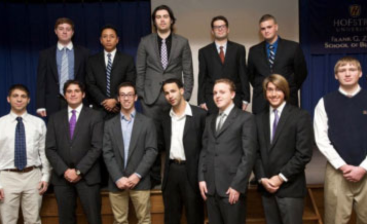
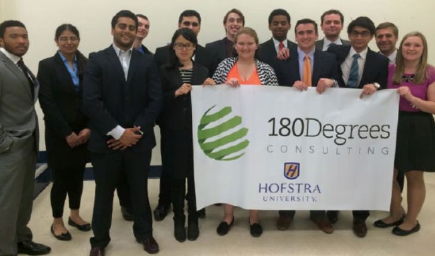
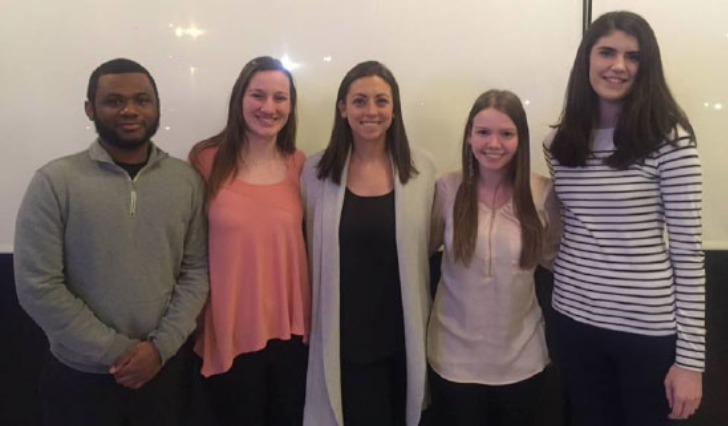
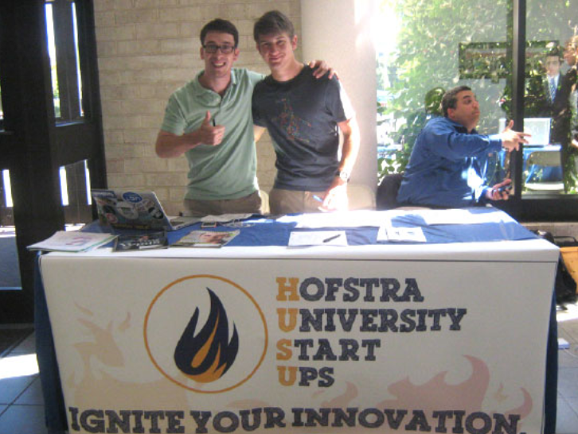

Student Organizations And Affiliations
The Capital One Campus Entrepreneurship Challenge at Hofstra University is a joint initiative led by the Frank G. Zarb School of Business, Capital One Bank and Uniondale High School. Through the year-long program, Capital One Bank Associates serve as a "Board of Directors", mentoring and coaching Zarb School of Business students as they develop new ventures. The Zarb students, in turn, serve as mentors to aspiring student entrepreneurs in Uniondale High School's chapter of the Distributive Education Clubs of America (DECA). Designed to provide a real-life experience, the students are required to develop their concepts, make a formal funding presentation to a panel of high-level Capital One Associates in order to obtain seed capital and then manage the venture. In the Spring semester, they submit four "quarterly reports" to their Capital One partners.
For more information, please contact Dr. Richard N. Hayes (E-mail: richard.hayes@hofstra.edu or (516) 463-5727).
Capital One Campus Entrepreneurship Challenge

180 Degrees Consulting
180 Degrees Consulting(180dc.org) is the world’s largest university-based consultancy and membership gives students the opportunity to work on real life consulting projects. Hofstra’s 180Degrees chapter brings strong-minded, analytical thinkers together to help solve various issues faced by nearby non-profit organizations. Students are trained to become 180Degrees consultants before they join one of the semester-long teams that meet and advise each non-profit. Guest Speakers regularly provide additional insights into the world of consulting. Recent non-profits include: Long Island’s largest youth organization; Long Island’s largest private social service agency providing food and shelter to the homeless; a local non-profit providing shelter, education and vocational training for single young mothers; and the Long Island Region’s volunteer service agency.
All majors are encouraged to join and become student consultants, regardless of area of study. For additional information please contact hofstra@180dc.org or club advisor Professor Paul Martorana at paul.martorana@hofstra.edu. Membership information is available by contacting. hofstra@180dc.org or at https://hofstra.collegiatelink.net/organization/180degreesconsulting.
Zarb Graduate Human Resource Management Association
The Zarb Graduate Human Resource Management Association is the student run organization that is affiliated with the Society for Human Resource Management (SHRM), the world’s largest professional association devoted to the education and advancement of human resource managers. The student chapter presents opportunities for students to combine their theoretical knowledge with real world experiences as they prepare to enter the dynamic field of human resources. There is a close alliance between the Zarb Graduate Human Resource Management Association and the SHRM Long Island (SHRM L.I.) chapter which sponsors dinner meetings that focus on topics that help students navigate and advance in their careers, networking events with opportunities to meet HR professionals, and workshops that offer assistance in building workforce readiness skills in human resources.
Traditionally, the student chapter sends representatives to the National Association of Mothers’ Centers (NAMC) Work Life Conference which is usually held in November. The Conference offers workshops and panels that discuss legal, financial and family issues, and the balance between one’s professional and personal roles. Another highlight of the fall semester is the annual SHRM L.I. holiday party in December. The spring semester is marked by the chapter’s participation in SHRM’s Northeastern Student Conference, which features a case solving competition in which the students apply their analytical and presentation skills to solving a workplace human resource problem. The chapter organizes guest speaker events featuring HR managers, company visits hosted by corporate HR departments, and seminars which discuss hot topics in human resource management. In addition, as a vital part of the total graduate education experience, the Zarb Graduate Human Resource Management Association often partners with other student groups to bring business executives to speak to Hofstra students.
The Zarb graduate student chapter of SHRM is open to students seeking an M.S. in Human Resources or an M.B.A. in Management. Interested students are urged to attend the Club Fair held in September, at the beginning of the academic year. Membership information can also be obtained from Meilin Liu, chapter president, email: mliu6@pride.hofstra.edu, or by contacting Diane Persky, faculty advisor, email: diane.r.persky@hofstra.edu>
All majors are encouraged to join and become student consultants, regardless of area of study. For additional information please contact hofstra@180dc.org or club advisor Professor Paul Martorana at paul.martorana@hofstra.edu. Membership information is available by contacting hofstra@180dc.org or at https://www.hofstra.collegiatelink.net/organization/180degreesconsulting.

Society for Advancement of Management
The Hofstra University Chapter of the National Organization Society for Advancement of Management (SAM). SAM provides an opportunity for students to develop their management expertise and leadership skills by participating in professional workshops, networking events, fundraisers, panel discussions and the Guest Speakers Series. (photo: Guest Speaker, Director of Operations of TEKSystems).
All majors are encouraged to join and become student consultants, regardless of area of study. To join SAM or for additional information please visit https://www.hofstra.collegiatelink.net/organization/societyfortheadvancementofmanagement which includes a link to SAM’s Facebook page; or contact club advisor Professor Paul Martorana at Paul.Martorana@Hofstra.edu or club President Molly Goldberg at mgoldberg1@pride.hofstra.edu
All majors are encouraged to join and become student consultants, regardless of area of study. For additional information please contact hofstra@180dc.org or club advisor Professor Paul Martorana at paul.martorana@hofstra.edu". Membership information is available by contacting. hofstra@180dc.org or at https://hofstra.collegiatelink.net/organization/180degreesconsulting.

Hofstra University Start Ups
We transform business ideas into fruition by engaging in entrepreneurial competitions and events. Our goal is to promote collaboration between clubs and fellow students, in order to create successful businesses that will represent not only the club's abilities, but the talents of everyone working together. From marketer to developer, graphic designer to entrepreneur, we strive to bring everyone together to create products and services that reflect our passion of innovation and creation.
URL: http://www.hofstrastartups.org